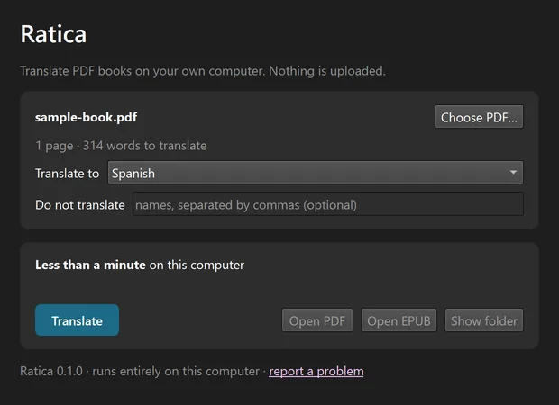
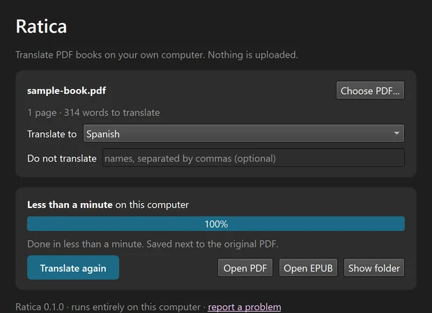

Keeps the layout
Every page stays where it was: headings, tables of contents, lists, figures, colours and page numbers.
Nothing is uploaded
Ratica translates whole PDF books on your own computer with a local AI model, and keeps every page looking like the original. Free and open source.
See it
Drag the handle. Headings, the list, the chart labels and the note box stay exactly where they were.
Demo page written for this site. Translated by Ratica 0.1 with the default model.
How it works
Choose a book or drop it on the window. Ratica recognises the language it is written in.
Choose one of 23 languages and press Translate. Pause and resume whenever you like; progress is saved.
You get a PDF in the original layout and an EPUB for e-readers, saved next to your PDF.


On first start Ratica downloads its translation engine and AI model once (about 5–6 GB) and measures your computer's speed. After that it works offline.
Why Ratica
Every page stays where it was: headings, tables of contents, lists, figures, colours and page numbers.
The AI model runs on your computer. Your books and text are never uploaded.
No account, no subscription and no per-page fee. Free and open source.
Code, URLs and formulas are left exactly as they are, so technical books stay correct.
Read the translation as the original pages, or as an EPUB that reflows on phones and e-readers.
Picks CUDA, Metal or Vulkan by itself and leaves room for your other work.
Loading the notes of the latest release… If nothing appears, read them on GitHub.
Languages
Requirements
Windows 10/11, macOS 12 or newer, or Linux, with about 6 GB of free disk space. On an entry-level 6 GB GPU a 200-page book takes about 30–45 minutes.
FAQ
Yes. Ratica is free and open source under the AGPL-3.0 license. There is no account, subscription or API key.
No. Translation runs on your own computer. Ratica only goes online on first start to download its translation engine and AI model (about 5–6 GB). It never uploads your files or text.
Gemma-4-E4B-it (Apache 2.0) through llama.cpp. It was chosen after comparing several open models on translation quality, protection of code and URLs, speed and memory use.
On an entry-level GPU with 6 GB of memory, a 200-page book takes about 30–45 minutes. Faster GPUs finish sooner. Without a GPU it takes many hours.
Not yet. Ratica translates PDFs that contain real text. Scanned pages need OCR, which is planned. Text inside images and speech bubbles stays in the original language for now.
The Windows installer is not code-signed yet, so SmartScreen may warn the first time. Choose More info → Run anyway. The macOS app is signed and notarized by Apple.
The engine and model live outside the app. Delete them from the bottom of Ratica's window, or let the Windows uninstaller remove them. Then remove the app as usual.
AGPL-3.0. Built with llama.cpp, Gemma, PyMuPDF and PySide6. Hardware reports and translation feedback in any language are very welcome.